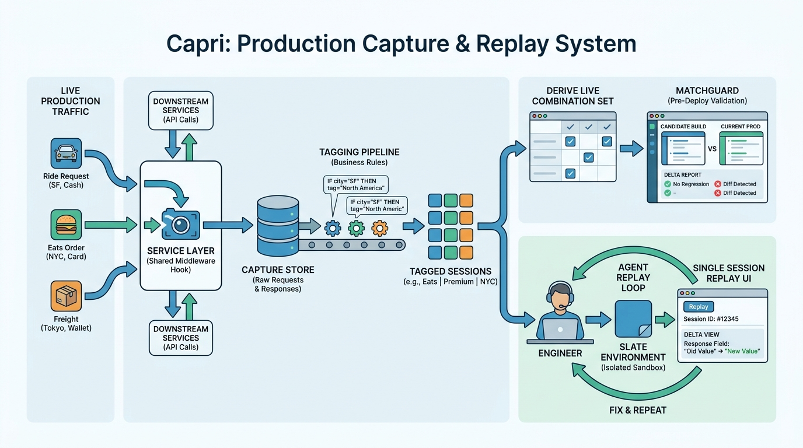

Part III — LIFECYCLE: The Feature Path, Rewired
Capri: Capture, Replay and the Combinatorial Test Problem

Image generated by Google Gemini (gemini-3-pro-image-preview)
Part III — LIFECYCLE: The Feature Path, Rewired

Image generated by Google Gemini (gemini-3-pro-image-preview)